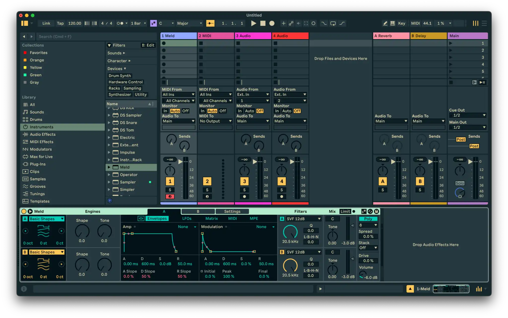
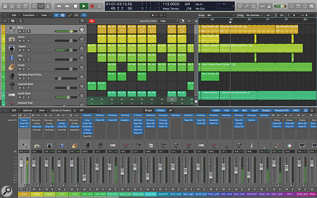
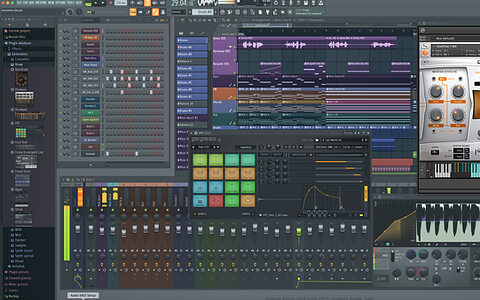
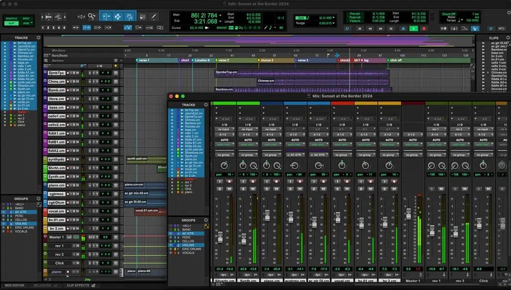

A user and market research study for a spatial (music) mixing environment.
Modern DAWs provide an all-inclusive environment for production, recording, mixing, and mastering. But this continuity creates a blurry creative process where producers never clearly transition from building a song to shaping its sound. The result: unfinished tracks, underdeveloped mixes, and a generation of producers who can write music but can't articulate why their mixes don't sound professional.
Producing and mixing are fundamentally different creative phases that engage different cognitive processes. But no tool, no ceremony, and no process tells a producer when to stop building a song and start shaping its sound. The DAW provides no structure for this transition — so producers stay in a permanent state of producing, and the mix never gets its own attention.
Mixing interfaces are built on analog console metaphors — faders, knobs, channel strips — designed for engineers with physical muscle memory on real hardware. These designs earned their place in the analog domain. But a generation of digital-native producers now learns mixing through metaphors that weren't designed for them. The digital domain offers far richer possibilities for visualization and spatial interaction — possibilities that mixing interfaces haven't evolved to explore.
These two problems converge: producers need a workflow that separates mixing from production as a distinct creative act, and they need an interface that speaks their language — spatial, visual, relational — rather than translating through analog conventions they never learned. What emerges is a mixing environment where position replaces parameters, and the act of entering the environment is itself the transition from producing to mixing.
Independent producers who work in DAWs like Ableton Live, Logic Pro, and FL Studio. They write, arrange, and produce their own music — and then mix it themselves, not because they're trained to, but because the tool doesn't distinguish between producing and mixing.
They have ear-level intuition: they can hear when something is wrong with a mix, but they can't always articulate what it is or how to fix it. They've never touched an analog mixing console. They learned production in a digital-first environment and absorbed mixing concepts through trial and error, YouTube tutorials, and the built-in presets of their DAW.
They know their productions could sound more polished, more spacious, more clear. They just don't have the conceptual framework or the dedicated workflow to get there.
Secondary audience (aspirational): Mix engineers who want a more intuitive spatial interface — but whose adoption is harder because they already speak the language of existing tools.
These producers have grown accustomed to a language of sound that is spatial and image-driven. They talk about placing the vocal “up front,” pushing the reverb “behind” the drums, keeping the bass “centered.” Their mental model is a space, not a spreadsheet of parameters. But the tools they use don't reflect that language back to them.
They need the chance to engage with fundamentals — level, pan, EQ, compression — in a space that relates those concepts to the mental models they already carry. A mixing environment where hearing a problem means seeing the problem, and diagnosing it is a matter of moving things in space rather than decoding parameter values. They don't need more plugins. They need a different frame.
A spatial mixing environment that separates mixing from production, visualizes the stereo field as a 2D canvas where position has meaning, and teaches mixing concepts through interaction rather than instruction.
Each capability area addresses a distinct dimension of the mixing experience — from the core spatial interaction to the community that forms around it.
The 2D canvas where position has meaning. Tracks are represented as objects within a visual stereo field — speakers on left and right, the space between them as the mix. Pan, depth, and frequency relationships are communicated spatially rather than through isolated numeric parameters. This is the core interaction surface: what you see is how it sounds.
EQ, compression, level, and pan — presented through spatial and visual metaphors rather than analog skeuomorphs. The premise: the vast majority of a mix can be executed with these four fundamentals. Mixality offers a focused, opinionated toolkit that emphasizes mastery of core concepts over proliferation of specialized plugins.
Learning through doing. Diagnostic tools surface problems spatially — where does the mix concentrate the most energy? Which objects are competing for the same space? The visual language is the education: mixing concepts become visible because the interface makes relationships between sounds legible. This is not a course bolted onto a tool. The feedback is the product.
The canvas exists over time. Sound objects move, parameters shift, and the spatial arrangement evolves across a song's structure. Automation is keyframe-based, drawing from video editing paradigms rather than DAW automation lanes — because a mix is a composition in space and time, not a sequence of static parameter values.
Users share their spatial mix canvases as visual artifacts — representations of mix decisions that others can study, learn from, or use as structural templates. Stem challenges let the community offer different mixes of the same source material, emphasizing that mixing is craft, not formula. Explore the mix practices of your favorite genres and learn from the engineers who shaped them.
Import stems and session data from existing DAW projects. The act of bringing audio into Mixality is itself the transition — a declaration that production is complete and mixing has begun.
Built-in visual feedback — spectral displays, energy distribution, frequency overlap indicators — integrated directly into the spatial canvas rather than isolated in separate analysis windows.
Visual representation of bus and summing structures. See what passes through where, understand signal flow through spatial relationships rather than abstract routing diagrams.
Color, opacity, and shape differentiate sound objects from processing zones. A deliberate visual grammar that communicates relationships honestly — without false boundaries or oversimplified representations.
Parameter changes over time, with canvas states that evolve across song sections. Inspired by video editing timelines — because a mix is a spatial composition that moves.
Essential spaces — canvas view, timeline, track detail — clearly defined and purposefully organized. Each view serves a distinct stage of the mixing process, avoiding the multi-window sprawl of traditional DAWs.
Shareable mix structures that capture spatial arrangements as starting points. Community-contributed templates encode mixing knowledge as spatial patterns rather than written instructions.
Community-driven mixing exercises where users receive the same set of stems and submit their own spatial mixes. Compare approaches, discover different interpretations of the same material, and learn from how others use the fundamentals.
The digital audio workstation is the backbone of every producer's ecosystem. Everything else — plugins, spatial tools, educational platforms — orbits around it. No major commercial product has attempted to reimagine the mixing interface as a spatial environment, despite academic research validating the approach.
All-in-one environments that handle production, recording, mixing, and mastering in a single continuous workspace. Mixing interfaces rely on analog console metaphors — faders, knobs, channel strips. No structural separation between creative phases. The producer's entire workflow lives here, and every other tool in this landscape is either a plugin within the DAW or a peripheral service alongside it.




Presents tracks as movable pucks on a 2D canvas controlling pan, gain, and stereo width. The closest existing product to spatial mixing — but limited to three parameters with no processing, no EQ visualization, and no educational component. Requires iZotope's proprietary inter-plugin communication on every track.
The only commercial DAW that explicitly separates mixing as a workflow stage with a dedicated mix page. Built by Harrison, with 50+ years of console manufacturing. But it still relies on analog console emulation and traditional channel strip metaphors — the transition is structural, not interfacial.
Tools for positioning audio objects in 3D space for surround and Atmos delivery formats. These demonstrate that spatial interaction for audio has commercial viability — but they solve a different problem: immersive format delivery, not stereo mixing or mixing education.
Automated processing from stems or stereo files. Useful for quick results but operate as black boxes — the user doesn't learn why decisions were made or how to make them independently. The mix is done for you, not by you.
Gamified ear training that teaches frequency identification, compression detection, and spatial awareness in isolation. Producers develop technical ears but never apply those skills in a mixing context — the gap between identification and application remains.
No existing product addresses these gaps together. Mixality is built at their intersection.
Mixality's design rationale draws on frameworks from the course material and broader design thinking literature.
Claude (Anthropic) was used in a primarily developmental capacity throughout this assignment: assisting in the creation of visual assets and structuring the HTML/CSS. All product decisions, design direction, problem framing, narrative structure, and domain expertise were student-directed.
| Item | Role | Description |
|---|---|---|
| Product idea selection | Student-directed | Student chose scene-based mixing concept over alternative options; articulated problem statement and core vision |
| Problem statement & narrative structure | Student-directed | Student articulated core problems, determined narrative arc, and directed all structural decisions; Claude assisted with language refinement |
| Market research | Collaboratively developed | Student identified key competitors and landscape categories; Claude conducted web research to expand and verify |
| Capability areas & features | Collaboratively developed | Iterative dialogue to define capability areas and distinguish them from features; student directed all scope decisions |
| Web page implementation | Claude-implemented | Claude built HTML/CSS/JS structure, diagrams, animations, and visual assets from student direction and iterative feedback |
| Design direction | Student-directed | All visual design decisions, diagram concepts, interaction ideas, and naming choices made by student |
Citation: Anthropic. (2025). Claude [Large language model]. https://www.anthropic.com